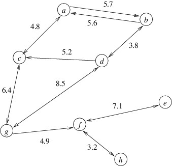

Shortest Paths
In this section, we will consider a common graph problem — that of finding a shortest path from a node u to a node v in a directed graph. We will assume that each edge contains as its data a nonnegative number. This number may represent a physical distance or some other cost, but for simplicity, we will refer to this value as the length of the edge. We can then define the length of a path to be the sum of the lengths of all the edges along that path. A shortest path from u to v is then a path from u to v with minimum length. Thus, for example, the shortest path from a to h in the graph below is a-c-g-f-h, and its length is 4.8 + 6.4 + 4.9 + 3.2 = 19.3.

The biggest challenge in finding an algorithm for this problem is that the number of paths in a graph can be huge, even for relatively small graphs. For example, a directed graph with 15 nodes might contain over 10 billion paths from a node u to a node v. Clearly, an algorithm that simply checks all paths would be impractical for solving a problem such as finding the shortest route between two given locations in North America. In what follows, we will present a much more efficient algorithm due to Edsger W. Dijkstra.
First, it helps to realize that when we are looking for a shortest path from u to v, we are likely to find other shortest paths along the way. Specifically, if node w is on the shortest path from u to v, then taking that same path but stopping at w gives us a shortest path from u to w. Returning to the above example, the shortest path from a to h also gives us shortest paths from a to each of the nodes c, g, and f. For this reason, we will generalize the problem to that of finding the shortest paths from a given node u to each of the nodes in the graph. This problem is known as the single-source shortest paths problem. This problem is a bit easier to think about because we can use shortest path information that we have already computed to find additional shortest path information. Then once we have an algorithm for this problem, we can easily modify it so that as soon as it finds the shortest path to our actual goal node v, we terminate it.
Dijkstra’s algorithm progresses by finding a shortest path to one node at a time. Let S denote the set of nodes to which it has found a shortest path. Initially, S will contain only u, as the shortest path from u to u is the empty path. At each step, it finds a shortest path that begins at u and ends at a node outside of S. Let’s call the last node in this path x. Certainly, if this path to x is the shortest to any node outside of S, it is also the shortest to x. The algorithm therefore adds x to S, and continues to the next step.
What makes Dijkstra’s algorithm efficient is the way in which it finds each of the paths described above. Recall that each edge has a nonnegative length. Hence, once a given path reaches some node outside of S, we cannot make the path any shorter by extending it further. We therefore only need to consider paths that remain in S until the last edge, which goes from a node in S to a node outside of S. We will refer to such edges as eligible. We are therefore looking for a shortest path whose last edge is eligible.
Suppose (w, x) is an eligible edge; i.e., w is in S, but x is not. Because w is in S, we know the length of the shortest path to w. The length of a shortest path ending in (w, x) is simply the length of the shortest path to w, plus the length of (w, x).
Let us therefore assign to each eligible edge (w, x) a priority equal to the length of the shortest path to w, plus the length of (w, x). A shortest path ending in an eligible edge therefore has a length equal to the minimum priority of any eligible edge. Furthermore, if the eligible edge with minimum priority is (w, x), then the shortest path to x is the shortest path to w, followed by (w, x).
We can efficiently find an eligible edge with minimum priority if we store all eligible edges in a MinPriorityQueue<TEdgeData, Edge<TNode, TEdgeData>>. Note however, that when we include x in S as a result of removing (w, x) from the queue, it will cause any other eligible edges leading to x to become ineligible, as x will no longer be outside of S. Because removing these edges from the min-priority queue is difficult, we will simply leave them in the queue, and discard them whenever they have minimum priority. This min-priority queue will therefore contain all eligible edges, plus some edges whose endpoints are both in S.
We also need a data structure to keep track of the shortest paths we have found. A convenient way to do this is, for each node to which we have found a shortest path, to keep track of this node’s predecessor on this path. This will allow us to retrieve a shortest path to a node v by starting at v and tracing the path backwards using the predecessor of each node until we reach u. A Dictionary<TNode, TNode> is an ideal choice for this data structure. The keys in the dictionary will be the nodes in S, and the value associated with a key will be that key’s predecessor on a shortest path. For node u, which is in S but has no predecessor on its shortest path, we can associate a value of u itself.
The algorithm begins by adding the key u with the value u to a new dictionary. Because all of the outgoing edges from u are now eligible, it then places each of these edges into the min-priority queue. Because u is the source node of each of these edges, and the shortest path from u to u has length 0, the priority of each of these edges will simply be its length.
Once the above initialization is done, the algorithm enters a loop that iterates as long as the min-priority queue is nonempty. An iteration begins by obtaining the minimum priority p from the min-priority queue, then removing an edge (w, x) with minimum priority. If x is a key in the dictionary, we can ignore this edge and go on to the next iteration. Otherwise, we add to the dictionary the key x with a value of w. Because we now have a shortest path to x, there may be more eligible edges that we need to add to the min-priority queue. These edges will be edges from x that lead to nodes that are not keys in the dictionary; however, because the min-priority queue can contain edges to nodes that are already keys, we can simply add all outgoing edges from x. Because the length of the shortest path to x is p, the priority of each of these outgoing edges is p plus the length of the outgoing edge.
Note that an edge is added to the min-priority queue only when its source is added as a key to the dictionary. Because we can only add a key once, each edge is added to the min-priority queue at most once. Because each iteration removes an edge from the min-priority queue, the min-priority queue must eventually become empty, causing the loop to terminate. When the min-priority queue becomes empty, there can be no eligible edges; hence, when the loop terminates, the algorithm has found a shortest path to every reachable node.
We can now modify the above algorithm so that it finds a shortest path from u to a given node v. Each time we add a new key to the dictionary, we check to see if this key is v; if so, we return the dictionary immediately. We might also want to return this path’s length, which is the priority of the edge leading to v. In this case, we could return the dictionary as an out parameter. Doing this would allow us to return a special value (e.g., a negative number) if we get through the loop without adding v, as this would indicate that v is unreachable. This modified algorithm is therefore as follows:
- Construct a new dictionary and a new min-priority queue.
- Add to the dictionary the key u with value u.
- If u = v, return 0.
- For each outgoing edge (u, w) from u:
- Add (u, w) to the min-priority queue with a priority of the length of this edge.
- While the min-priority queue is nonempty:
- Get the minimum priority p from the min-priority queue.
- Remove an edge (w, x) with minimum priority from the min-priority queue.
- If x is not a key in the dictionary:
- Add to the dictionary the key x with a value of w.
- If x = v, return p.
- For each outgoing edge (x, y) from x:
- Add (x, y) to the min-priority queue with priority p plus the length of (x, y).
- Return a negative value.
The above algorithm computes all of the path information we need, but we still need to extract from the dictionary the shortest path from u to v. Because the value for each key is that key’s predecessor, we can walk backward through this path, starting with v. To get the path in the proper order, we can push the nodes onto a stack; then we can remove them in the proper order. Thus, we can extract the shortest path as follows:
- Construct a new stack.
- Set the current node to v.
- While the current node is not u:
- Push the current node onto the stack.
- Set the current node to its value in the dictionary.
- Process u.
- While the stack is not empty:
- Pop the top node from the stack and process it.